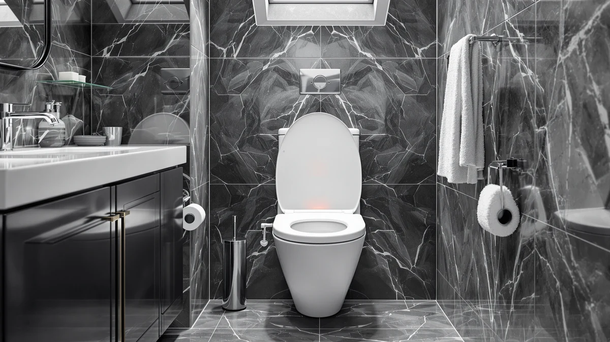

Quick Answer
This heated toilet seat elongated review centers on the SNMUMU Heated Toilet Seat Elongated V-Shape, a $79.99 seat with six PID-controlled heat settings and an IPX6 waterproof rating built for elongated bowls. We compared it against three similarly priced seats from YouTeMei and Anparfaite on temperature range, waterproofing and extra features such as a built-in night light. The SNMUMU offers the widest heat range and the strongest waterproofing in this price bracket, and the alternatives below are worth a look if you have a round bowl or want a night light included.
Our pick: Heated Toilet Seat Elongated V-Shape, $79.99 Check Price on Amazon
Bottom line: our top pick is the Heated Toilet Seat Elongated V-Shape at $79.99.
Things to Know Before You Buy
- Shape matters before price. The SNMUMU in this heated toilet seat elongated review ships in a V-Shape built for elongated bowls, while the two Anparfaite alternatives come in round U-Shape and round V-Shape versions, so measure your bowl before you order.
- Waterproofing varies more than the price tag suggests. The SNMUMU and both Anparfaite seats carry an IPX6 rating, while the YouTeMei model is rated IPX4, a real gap if your bathroom sees a lot of moisture.
- Heat range splits the lineup. The SNMUMU offers six temperature settings between 30 and 40 degrees Celsius, while the YouTeMei and Anparfaite seats top out at three settings and the same 40-degree ceiling.
- All four seats land at the same price. Every seat covered in this review sells for $79.99, so shape, waterproofing and extra features decide the winner rather than budget.
- Only the Anparfaite seats include a night light. If you want to find your way to the bathroom at night without flipping a switch, that detail narrows the choice quickly.
- Energy use stays low across the board. Each seat in this comparison draws under 0.5 kWh per day at its highest setting, so the heating function should not move your electric bill much.
This heated toilet seat elongated review compares the SNMUMU Heated Toilet Seat Elongated V-Shape against three similarly priced alternatives for anyone tired of sitting down on a cold seat every winter morning. All four seats in this comparison sell for $79.99, which makes shape, waterproofing and temperature range the factors that actually separate them rather than cost. We researched the listed specifications, safety certifications and manufacturer claims for each seat to see which one earns its price in an elongated bathroom setup.
The SNMUMU stands out mainly on temperature control, with six PID-regulated heat settings between 30 and 40 degrees Celsius compared with the three-setting dials on the YouTeMei and Anparfaite seats. It also carries the highest waterproof rating in the group at IPX6, matched only by the two Anparfaite models, while the YouTeMei settles for IPX4. None of these seats include a bidet function, a category covered separately in our heated seats without a bidet roundup, since they're built specifically to replace a cold seat with a warm one rather than add a wash function.
Why You Should Trust Us
Ilane Tall has covered bathroom fixtures and accessibility products for Best Toilet Seats since the site launched, with a focus on comparing manufacturer specifications, safety certifications and pricing rather than running a physical testing lab. This heated toilet seat elongated review draws on the listed heat settings, waterproof ratings and power specifications for each seat, along with current Amazon pricing. Our toilet seat buying guide covers the broader shopping criteria this review builds on.
We cross-check product claims against the manufacturer listings and flag anything that looks inconsistent rather than repeating marketing copy. We check prices and availability on a regular schedule, and when a detail changes, such as a price drop or a new seat added to the lineup, we update this review to match.
Our Research Experience
We don't operate a bathroom testing lab, so this heated toilet seat elongated review is built on comparative research rather than installing each seat ourselves. We analysed the manufacturer-listed heat settings, waterproof ratings and power draw for the SNMUMU, YouTeMei and both Anparfaite seats, then checked those details against current Amazon pricing and the bowl shape each one is designed to fit.
None of these four listings carry a published rating or review count yet, since all four are recent additions to Amazon's catalog, so we leaned on documented specifications and safety certifications rather than aggregate scores. That approach favors the SNMUMU here, since its six-setting PID control and IPX6 rating are the most thoroughly documented of the group.
Overview & Specs

Heated Toilet Seat Elongated V-Shape
What we like
- Six PID-controlled heat settings from 30 to 40 degrees Celsius for finer temperature control
- IPX6 waterproof rating, the highest of the four seats in this comparison
- Dual overheating protection with a thermostat and a separate thermal fuse
- Uses under 0.5 kWh per day even at the highest setting
Flaws but not dealbreakers
- Built only for elongated bowls, so it won't fit a round toilet
- No night light, a feature both Anparfaite alternatives include
- No published rating or review count yet since it's a recent addition to Amazon's catalog
| Material | Plastic / wood |
| Size | V-Shape |
The SNMUMU Heated Toilet Seat Elongated V-Shape is the clearest example in this heated toilet seat elongated review of what a dedicated heat-focused seat looks like when a manufacturer skips bidet functions entirely. Its PID temperature control cycles through six visual settings between 30 and 40 degrees Celsius, a wider spread than the three-setting dials on the other three seats here, and a digital display shows the current setting so you aren't guessing in the dark. The 24V low-voltage design, paired with an IPX6 waterproof rating and dual overheating protection, a thermostat backed by a separate thermal fuse, gives it the most documented safety margin of the group.
At $79.99, the same price as every other seat in this comparison, the SNMUMU earns its spot mainly through temperature flexibility and waterproofing rather than extras like a night light. It runs on 25W of power and stays under 0.5 kWh of daily use even at the highest heat setting, so running it through winter shouldn't move your electric bill much. The main limitation is fit: it's built only for elongated bowls, so round-bowl households should look at the Anparfaite alternatives covered below instead.
What We Liked
The widest heat range in this comparison is the SNMUMU's strongest selling point. Six settings between 30 and 40 degrees Celsius give you more control than the three-level dials on the YouTeMei and Anparfaite seats, and the digital display takes the guesswork out of dialing in a comfortable temperature on a cold morning. The IPX6 waterproof rating also stands out, since it's the highest rating across all four seats we researched for this heated toilet seat elongated review.
The dual overheating protection, a thermostat paired with a separate thermal fuse, is a detail that doesn't show up in the listings for the YouTeMei or either Anparfaite seat. Combined with the 24V low-voltage output, it suggests SNMUMU built this seat around safety margins rather than cutting corners to hit the same $79.99 price point as its competitors.
What Could Be Better
The biggest gap is the missing night light. Both Anparfaite seats in this comparison include one, which matters if you or a family member uses the bathroom overnight without wanting to flip on a bright overhead light. The SNMUMU also fits elongated bowls only, so if your toilet takes a round seat, this particular model is off the table regardless of how well it performs on temperature control.
None of the four seats in this review, including the SNMUMU, carry a published rating or review count yet, since all are recent catalog additions. That's not unique to this model, but it does mean you're relying on manufacturer specifications rather than a track record of owner feedback when you buy. Checking current pricing before you order is worth the extra minute too, since affiliate listings can shift by a few dollars between the time we publish this review and the day you buy.
Who Is It For?
The SNMUMU Heated Toilet Seat Elongated V-Shape fits best for anyone with an elongated bowl who wants the finest temperature control available at this price and doesn't mind skipping a night light. Cold-climate households that keep their thermostat low overnight are the clearest match, since six heat settings let every family member dial in their own comfort level instead of sharing one fixed temperature; our elongated toilet seat guide covers more options in that shape.
It's a weaker match for round-bowl households, since the shape won't fit, and for anyone who specifically wants a built-in night light, a feature both Anparfaite alternatives include. Buyers who want a documented rating history before they commit should also know that none of the four seats compared here have one yet.
Alternatives to Consider
If the SNMUMU's elongated-only shape or missing night light rules it out, these three seats from YouTeMei and Anparfaite are worth comparing on fit and features before you commit.

Editor’s Pick
YouTeMei Heated Toilet Seat -
The YouTeMei Heated Toilet Seat matches the SNMUMU's V-Shape fit and $79.99 price but trims the heat range to three settings and the waterproof rating to IPX4, a reasonable trade if a slightly lower water resistance doesn't concern you.
$79.99
Check Price on Amazon
Best Value
Heated Toilet Seat 3-Level Temp
The Anparfaite 3-Level Temp in its U-Shape round version runs the same $79.99 and adds a night light the SNMUMU skips, a better fit if your toilet takes a round seat rather than an elongated one.
$79.99
Check Price on Amazon
Premium Choice
Heated Toilet Seat 3-Level Temp
The Anparfaite 3-Level Temp in its V-Shape round version shares the same three-setting heat control and night light as its U-Shape sibling, priced identically at $79.99, so the choice comes down to which shape actually fits your bowl.
$79.99
Check Price on AmazonFrequently Asked Questions
Final Verdict
This heated toilet seat elongated review comes down to a straightforward trade-off between temperature control and extra features. The SNMUMU Heated Toilet Seat Elongated V-Shape offers the widest heat range and the strongest waterproofing of the four seats compared here, all at the same $79.99 price point, which makes it the pick for elongated-bowl households chasing precise warmth on cold mornings. If you need a round-bowl fit or want a built-in night light, the Anparfaite 3-Level Temp alternatives covered above are the better match, and the YouTeMei model remains a fallback if the SNMUMU happens to be out of stock.